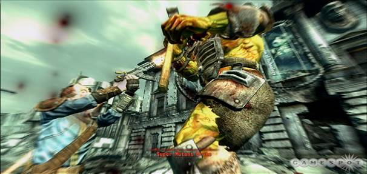

This focus is obvious from the first hour of the game, in which character creation and story exposition are beautifully woven together. It's an introduction best experienced on your own rather than described in detail here, but it does set up Fallout 3's framework: It's the year 2277, and you and your father are residents of Vault 101, one of many such constructs that shelter the earth's population from the dangers of post nuclear destruction. When dad escapes the vault without so much as a goodbye, you go off in search of him, only to find yourself snagged in a political and scientific tug of war that lets you change the course of the future. As you make your way through the decaying remnants of the District and its surrounding areas (you'll visit Arlington, Chevy Chase, and other suburban locales), you encounter passive-aggressive ghouls, a bumbling scientist, and an old Fallout friend named Harold who has, well, a lot on his mind. Another highlight is a diminutive collective of Lord of the Flies-esque refugees who reluctantly welcome you into their society, assuming that you play your cards right.
Welcome to the wasteland.
The city is also one of Fallout 3's stars. It's a somber world out there, in which a crumbling Washington Monument stands watch over murky green puddles and lurching beasts called mirelurks. You'll discover new quests and characters while exploring, of course, but traversing the city is rewarding on its own, whether you decide to explore the back rooms of a cola factory or approach the heavily guarded steps of the Capitol building. In fact, though occasional silly asides and amusing dialogue provide some humorous respite, it's more serious than previous Fallout games. It even occasionally feels a bit stiff and sterile, thus diminishing the sense of emotional connection that would give some late-game decisions more poignancy. Additionally, the franchise's black humor is present but not nearly as prevalent, though Fallout 3 is still keenly aware of its roots. The haughty pseudogovernment called the Enclave and the freedom fighters known as the Brotherhood of Steel are still powerful forces, and the main story centers around concepts and objectives that Fallout purists will be familiar with.
Although some of that trademark Bethesda brittleness hangs in the air, the mature dialogue (it's a bit unnerving but wholly authentic the first time you hear 8-year-olds muttering expletives) and pockets of backstory make for a compelling trek. There are more tad bits than you could possibly discover on a single play-through. For example, a skill perk (more on these later) will enable you to extract information from a lady of the evening, information that in turn sheds new light on a few characters--and lets you complete a story quest in an unexpected way. A mission to find a self-realized android may initiate a fascinating look at a futuristic Underground Railroad, but a little side gossiping might let you lie your way to quest completion. There aren't as many quests as you may expect, but their complexity can be astonishing. Just be sure to explore them fully before pushing the story forward: Once it ends, the game is over, which means that you'll need to revert to an earlier saved game if you intend to explore once you finish the main quest.
Thus choices are ruled only by your own sense of propriety and the impending results. For every "bad" decision you make (break into someone's room, sacrifice a soldier to save your own hide), your karma goes down; if you do something "good" (find a home for an orphan, give water to a beggar), your karma goes up. These situations trigger more consequences: Dialogue choices open up, others close off, and your reputation will delight some while antagonizing others. For example, a mutant with a heart of gold will join you as a party member, but only if your karma is high enough, whereas a brigand requires you to be on the heartless side. Even in the last moments of the game, you are making important choices that will be recounted to you during the ending scene, similar to the endings in the previous Fallout games. There are loads of different ending sequences depending on how you completed various quests, and the way they are patched together into a cohesive epilogue is pretty clever.
Fallout 3 remains true to the series’ character development system, using a similar system of attributes, skills, and perks, including the S.P.E.C.I.A.L. system from previous games for your attributes, such as strength, perception, and endurance. From there, you can specialize in a number of skills, from heavy weapons and lock-picking to item repairing and terminal hacking. You will further invest in these skills each time you level, and you'll also choose an additional perk. Perks offer a number of varied enhancements that can be both incredibly helpful and a bit creepy. You could go for the ladykiller perk, which opens up dialogue options with some women and makes others easier to slay. Or the cannibal perk, which lets you feed off of fallen enemies to regain health at the risk of grossing out anyone who glimpses this particularly nasty habit. Not all of them are so dramatic, but they're important aspects of character development that can create fascinating new options.
The VATS system makes for some awesome-looking battles.
Although you can play from an odd-looking third-person perspective (your avatar looks like he or she is skating over the terrain), Fallout 3 is best played from a first-person view. Where combat is concerned, you will play much of the game as if it is a first-person shooter, though awkwardly slow movement and camera speeds mean that you'll never confuse it for a true FPS. Armed with any number of ranged and melee weapons, you can bash and shoot attacking dogs and random raiders in a traditional manner. Yet even with its slight clunkiness, combat is satisfying. Shotguns (including the awesome sawed-off variant) have a lot of oomph, plasma rifles leave behind a nice pile of goo, and hammering a mutant's head with the giant and cumbersome supersledge feels momentously brutal. Just be prepared to maintain these implements of death: Weapons and armor will gradually lose effectiveness and need repairing. You can take them to a specialist for fixing, but you can also repair them yourself, as long as you have another of the same item. It's heartbreaking to break a favored weapon while fending off supermutants, but it reinforces the notion that everything you do in Fallout 3, even shooting your laser pistol, has consequences.
These aspects keep Fallout 3 from being a run-and-gun affair, and you shouldn't expect to play it as one. This is because the most satisfying and gory moments of battle are products of the Vault-Tec Assisted Targeting System, or VATS. This system is a throwback to the action-point system of previous Fallout games, in that it lets you pause the action, spend action points by targeting a specific limb on your enemy, and watch the bloody results unfold in slow motion. You aren't guaranteed a hit, though you can see how likely you are to strike any given limb and how much damage your attack might do. But landing a hit in VATS is immensely gratifying: The camera swoops in for a dramatic view, your bullet will zoom toward its target, and your foe's head might burst in a shocking explosion of blood and brains. Or perhaps you will blow his limb completely off, sending an arm flying into the distance--or launch his entire body into oblivion.
This anatomically based damage is implemented well. Shooting an Enclave soldier's arm may cause him to drop his weapon, shooting his leg will cause him to limp, and a headshot will disorient him. But you aren't immune to these effects, either. If your head takes enough damage, you'll need to deal with disorienting aftereffects; crippled arms mean reduced aiming ability. Fortunately, you can apply healing stimpacks locally to heal the injury; likewise, a little sleep will help ease your troubles. You can also temporarily adjust your stats using any number of aids and healing items. Yet these, too, come with consequences. A little scotch or wine sounds delicious and offers temporary stat boosts, but you can become addicted if you drink them enough, which results in its own disorienting visual effects. And, of course, you will need to deal with the occasional effects of radiation, which is a problem when you drink from dirty water sources or eat irradiated food. Radiation poisoning can be cured, but you'll still need to weigh the healing benefits of certain items versus the resultant increase in radiation levels.
Quests are often more than meets the eye.
This all makes for a remarkably complex game that's further deepened by other elements that add some gameplay variety and help the world feel more lived-in. Lock-picking initiates a decent, if odd, minigame that simulates applying torque to the lock with a screwdriver while twisting a bobby pin. The hacking minigame is an interesting word puzzle that requires a little bit of brainpower. Or if you fancy yourself more of a blacksmith than a wordsmith, you can earn and purchase schematics to help you create weapons using the various components scattered around the land. More of an interior decorator? No matter: Should you acquire the deed to an apartment, you can decorate it and even outfit it with a few helpful appliances. The jokester robot comes free.
Although you'll be spending much of your time wandering alone out in the wastes, or perhaps with a companion or two, there are some memorable cinematic sequences. You will join soldiers as they take on a giant boss mutant, spearhead an assault on a famous DC landmark, and escape from a doomed citadel while robots and soldiers fill the air with laser fire. It's a good mix, paying off the atmospheric tension with an occasional explosive release. Your enemies put up a good fight--often too good, considering that enemies that were a challenge early on can still be tough cookies 5 or 10 levels later. This scaling difficulty makes your sense of progression feel a bit more limited than in other role-playing games, but it feels somewhat appropriate, considering the game's open-ended nature and inhospitable world. After all, if skulking mutants weren't a constant threat, you wouldn't be afraid to peek into the dark corners of the Fallout world. It should be noted that unlike previous games in the series, you can’t take a completely peaceful approach to solving your quest. In order to complete the game, you will have to get into combat and kill off some enemies, but since the combat system is generally pretty satisfying, this shouldn’t be a serious problem for most players.
Fallout 3 takes place in a bombed-out, futuristic version of Washington DC, and in the game, the area is bleak but oddly serene. Crumbling overpasses loom overhead and optimistic 1950's-style billboards advertise their products with sunny catchphrases. It looks impressive, and you move around the wide-open wasteland with nary a loading time, though you will encounter loads when entering and exiting buildings or quick-jumping to areas you've already visited. Numerous set-piece landmarks are particularly ominous, such as a giant aircraft carrier that serves as a self-contained city, or the decrepit interiors of the National Air and Space Museum. But the small touches are just as terrific, such as explosions that produce mushroom-like clouds of flame and smoke, evoking the nuclear tragedy at the heart of Fallout 3's concept. Character models are more lifelike than in the developer's prior efforts but still move somewhat stiffly, lacking the expressiveness of the models in games such as Mass Effect.
It's a shame, in light of these impressive design elements, that the PlayStation 3 version is shockingly inferior to the others from a technical perspective. Although the Xbox 360 and PC versions display the occasional visual oddity and bland texture, these nitpicks are easy to overlook. Sadly, the jagged edges, washed-out lighting, and slightly diminished draw distance of the PS3 release aren't so easy to dismiss. We also experienced a number of visual bugs on the PS3. Character faces disappeared several times, leaving only eyeballs and hair; limbs on robots went missing; some character models had an odd outline around them as if they were cel-shaded; and the day-to-night transition may cause odd streaks on the screen as you move the camera around. This version doesn't even offer trophies, whereas the Xbox 360 and PC versions offer Xbox Live/Windows Live achievements.

While there is plenty of sombre exploration, you'll still find lots of action.
Aside from a few PS3-specific sound quirks, the audio in every version is marvelous. Most of the voice acting is great, some sleepy-sounding performances notwithstanding. Any game's atmosphere can live or die by its ambient audio, and Fallout 3 rises to the challenge. The whistling of the wind and the far-off sound of a gunshot are likely to give you a chill, and the slow-motion groans and crunch of a baseball bat meeting a ghoul's face sound wonderfully painful. If you get lonely and want some company, you can listen to a couple of radio stations, though the frequent repetition of the songs and announcements grates after a while. The soundtrack is fine, though it's a bit overwrought considering the desolate setting. Luckily, its default volume is very low, so it doesn't get in the way.
No matter what platform you own, you should play Fallout 3, which overcomes its issues by offering a deep and involving journey through a world that's hard to forget. It has more in common with Bethesda's Elder Scrolls series than with previous Fallout games, but that is by no means a bad thing. In fact, Fallout 3 is leaner and meaner than Bethesda's previous efforts, less expansive but more intense, while still offering immense replay value and quite a few thrills along the way. Whether you're a newcomer to the universe or a Fallout devotee, untold hours of mutated secrets are lurking in the darkest corners of Washington.